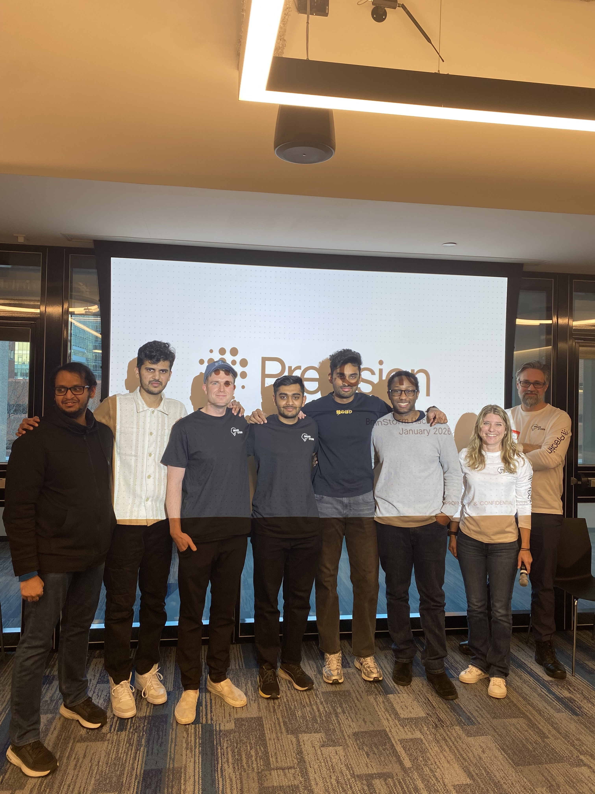
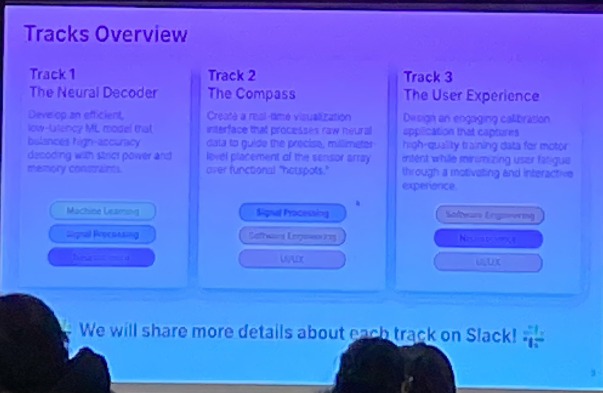

Real-Time Neural Decoding Under Hardware Constraints
BrainStorm 2026 was hosted by Precision Neuroscience, the company behind the Layer7 micro-ECoG array, a 1024-electrode cortical surface implant currently in clinical trials. Track 1 was built around that hardware.
The task: classify the sound frequency being heard by the subject, given a continuous stream of voltage from 1024 electrodes on the auditory cortex. One prediction per millisecond, using only past data.

Real BCIs run on implanted or wearable devices with hard limits on power, memory, and compute. A model that achieves high accuracy but won't fit on the target hardware is not a solution. The scoring was designed to enforce this: accuracy was worth 50 points, but latency and model size together were worth the other 50.
The Scoring Formula
The final score combined three exponentially penalized metrics. The penalties are steep: a 5 MB model scores about 12 points lower than a 1 MB model on the size component alone, and a 50ms lag costs roughly 8 points compared to 10ms.
| Metric | Weight | Formula | What it rewards |
|---|---|---|---|
| Balanced Accuracy | 50 pts | bal_acc × 50 | Equal recall across all classes |
| Prediction Lag | 25 pts | exp(−6 × lag_ms / 500) × 25 | Sub-10ms detection of stimulus onset |
| Model Size | 25 pts | exp(−4 × size_mb / 5) × 25 | Compact enough for embedded hardware |
Note: exponential penalty on lag and size is steep. A 5 MB model instead of 1 MB costs ~12 points. A 50ms lag instead of 10ms costs ~8 points.
The evaluation harness feeds data one sample at a time. Models can maintain a buffer of past data, but any use of future samples is disqualified. This rules out bidirectional filters and non-causal normalization.
90 Seconds of Brain Activity, 16:1 Class Imbalance
The training set is 90,386 timesteps sampled at 1000 Hz, across 1024 float32 channels. About 90 seconds of recording total. The validation set adds another 22,596 samples.
Nine target classes represent the frequency of the presented auditory tone in Hz, plus silence (0 Hz):
The silence class dominates at 67% of all samples. A model that predicts silence everywhere achieves 67% raw accuracy but only 11% balanced accuracy, which is the metric that counts. Naive training without addressing this imbalance will converge to a silent predictor.
One signal processing detail worth knowing: the sampling rate is 1000 Hz, so the Nyquist frequency is 500 Hz. The highest stimulus at 9736 Hz aliases into the recordable band at ~264 Hz. The model learns the cortical activity pattern each stimulus produces. All frequency discrimination happens within 0–500 Hz, and 93.9% of total signal power sits below 30 Hz (local field potential oscillations dominate).
PCA + EEGNet + a Large Context Window
The pipeline is three pieces: PCA compression from 1024 channels to 32, EEGNet for classification, and a 1600ms causal context window. Each component affects all three scoring dimensions and they were tuned together rather than in isolation.
Step 1: PCA Channel Reduction (1024 → 32)
High-density electrode arrays like the Layer7 record from 1024 channels simultaneously, but not all channels are equally informative. On this dataset, ~250 channels account for 50% of signal power; 600 channels account for 80%. The rest is noise and correlated redundancy.
Fitting PCA on the training data and projecting to 32 components shrinks every downstream weight matrix from 1024-wide to 32-wide, reducing parameter count and file size. The top 32 PCs capture the most consistent covariance across the electrode array, discarding the noise-dominated directions. At inference, the projection is one matrix multiply.
class PCAProjection:
def fit(self, X: np.ndarray) -> Self:
# X shape: (n_samples, 1024)
self.mean_ = X.mean(axis=0)
centered = X - self.mean_
_, _, Vt = np.linalg.svd(centered, full_matrices=False)
self.components_ = Vt[:self.n_components] # (32, 1024)
return self
def transform(self, x: np.ndarray) -> np.ndarray:
# At inference: single matrix multiply — (1024,) → (32,)
return (x - self.mean_) @ self.components_.TStep 2: EEGNet Architecture
EEGNet (Lawhern et al., 2018) was designed for BCI classification from EEG and ECoG. With 90 seconds of training data and tight size constraints, an architecture with structural assumptions about neural signals will outperform a general-purpose one on this kind of problem.
The architecture factors the spatiotemporal convolution into two explicit stages: a temporal filter that learns when neural features occur, followed by a depthwise spatial filter over channels. Keeping these stages separate, rather than a full joint spatiotemporal convolution, is what keeps the parameter count low enough to meet the size constraint.
def forward(self, x: torch.Tensor) -> torch.Tensor:
# x: (batch, 1, n_channels=32, window=1600)
# Block 1: temporal patterns
x = self.conv1(x) # (B, F1=8, 32, 1600)
x = self.bn1(x)
# Block 2: spatial channel combinations (depthwise)
x = self.depthwise(x) # (B, F1*D=16, 1, 1600)
x = self.bn2(x)
x = F.elu(x)
x = self.pool1(x) # (B, 16, 1, 400) — aggressive downsampling
x = self.dropout1(x)
# Block 3: separable convolution
x = self.separable1(x) # depthwise
x = self.separable2(x) # pointwise
x = self.bn3(x)
x = F.elu(x)
x = self.pool2(x) # (B, F2=16, 1, ~50)
x = self.dropout2(x)
x = x.flatten(start_dim=1)
return self.fc(x) # (B, 9)Step 3: Training Strategy
Class-weighted loss. Standard cross-entropy on this distribution trains toward silence. We weighted each class inversely proportional to its frequency, so a correct prediction on a rare tone contributes the same gradient signal as predicting silence correctly.
# Inverse frequency class weights
class_counts = np.bincount([label_to_idx[l] for l in labels])
weights = 1.0 / class_counts
weights = weights / weights.sum() * len(weights)
criterion = nn.CrossEntropyLoss(
weight=torch.tensor(weights, dtype=torch.float32).to(device)
)Final retrain on the full dataset. After settling on hyperparameters using the validation split, we retrained on combined train and validation data for 45 additional epochs. With 90 seconds of total recording, the extra 22,000 samples made a difference.
Final hyperparameters:
| Parameter | Value | Why |
|---|---|---|
projected_channels | 32 | Optimal size/accuracy tradeoff |
window_size | 1600 | 1.6 seconds of causal context — see below |
F1 (temporal filters) | 8 | EEGNet default |
D (depthwise multiplier) | 2 | EEGNet default |
dropout | 0.25 | Regularization on small dataset |
batch_size | 64 | Stable gradient estimates |
epochs | 30 + 45 | Validation tuning + full retrain |

Window Size Is Cheap. History Is Valuable.
Most teams used 50-128ms context windows. The reasoning is straightforward: smaller windows mean less data to process, so they should be faster. We pushed the window to 1600ms and found the inference time barely changed.
Accuracy jumped 27 percentage points with no change in inference latency.
| Window Size | Balanced Accuracy | Accuracy Score | Inference Latency | Delta |
|---|---|---|---|---|
| 128ms (128 samples) | ~67% | ~33.5 / 50 | <1ms | baseline |
| 1600ms (1600 samples) | ~94% | 47.1 / 50 | <1ms | +20% accuracy, same latency |
The explanation is in how EEGNet handles its input.
EEGNet's average pooling layers compress the time dimension before the computationally expensive operations run:
Input window: 1600 samples
After Pool1: 400 samples (÷4)
After Pool2: ~50 samples (÷8)
→ Classifier sees a 50-sample representation regardless of input window lengthBy the time the input reaches the classifier, a 1600-sample window has been compressed to roughly 50 time steps. The forward pass cost is dominated by fixed-size matrix multiplies.
The PCA projection and ring buffer update run in constant time. Latency is dominated by a handful of fixed-size matrix operations, not the input window length.
Auditory cortex responses to sustained tones build slowly. They are not sharp onset spikes but synchronized low-frequency oscillations that take hundreds of milliseconds to reach steady state. A 128ms window catches the onset transient but misses the stable activity that distinguishes one tone from another. At 1600ms, each class produces a clearly distinct pattern.
Final Leaderboard: 91.7 / 100, 22.5 Points Ahead
Ten teams competed. We finished at 91.7, with synapse second at 69.2. The accuracy component drove most of the gap: 47.1 vs 30.9 out of 50 points, corresponding to 94.2% balanced accuracy versus about 62%.
On latency and size the field was fairly competitive, with most teams achieving inference under 20ms. The accuracy gap came from the 1600ms context window. No other team ran with that window size.
Code
The full codebase is on GitHub, forked from the official BrainStorm starter template. It includes the EEGNet implementation, training scripts, and a benchmark utility that reports all three sub-scores for any checkpoint.
git clone https://github.com/qsimeon/brainstorm-track1-public
cd brainstorm-track1-public
make install # sets up uv venv + dependencies + git hooksuv run python examples/train_eegnet.py \
--window-size 1600 \
--projected-channels 32 \
--batch-size 64 \
--epochs 30uv run python examples/benchmark_eegnet.py
# outputs: balanced_accuracy, lag_ms, size_mb, and all three sub-scoresmodel = EEGNet.load() # loads model.pt from repo root
model.reset() # clear history buffer for new session
for sample in stream: # sample shape: (1024,)
prediction = model.predict(sample)
# prediction: scalar Hz class (0, 120, 224, ... 9736)What BCI Engineers Should Know
Profile latency before treating context window size as a constraint
For convolutional architectures with pooling, input length and inference time don't scale together. We moved from 128ms to 1600ms with no measurable latency change. The assumption that larger windows are slower is worth verifying before it shapes your architecture decisions.
PCA does more than reduce dimensionality on high-density arrays
In ECoG, most structured signal occupies a small subspace. PCA compression reduces model file size, speeds up computation, and discards noise-dominated directions simultaneously. On a three-way scoring metric, that combination of effects matters.
Track balanced accuracy from the first epoch on imbalanced data
With 67% silence, raw accuracy and balanced accuracy diverge by 60+ percentage points. An unweighted model will converge to predicting silence. Weight the loss from the start and track the right metric, or you won't notice the problem until it's too late to fix it.
Architecture choice matters more when training data is scarce
EEGNet's structure maps onto the actual properties of ECoG data: temporal before spatial, explicit pooling at appropriate scales. With 90 seconds of training, those built-in assumptions outperformed the flexibility of transformers and LSTMs, which have more capacity but needed more data to use it effectively.
Build the benchmark for all three scoring dimensions on day one
It is easy to optimize accuracy and find out near the end that the model is too large. The scoring formulas were public. We built a script early that reported all three sub-scores per run, which kept the tradeoffs visible throughout.
Team MindMeld · BrainStorm 2026, Track 1: Neural Decoder Challenge
Quilee Simeon · Dennis Loevlie · Raghav Gali · Rohan Bhatane · Shravankumar Janawade · Sriram G.
Hosted by Precision Neuroscience at Microsoft NERD Center, Boston · January 23–24, 2026 · 10 competing teams